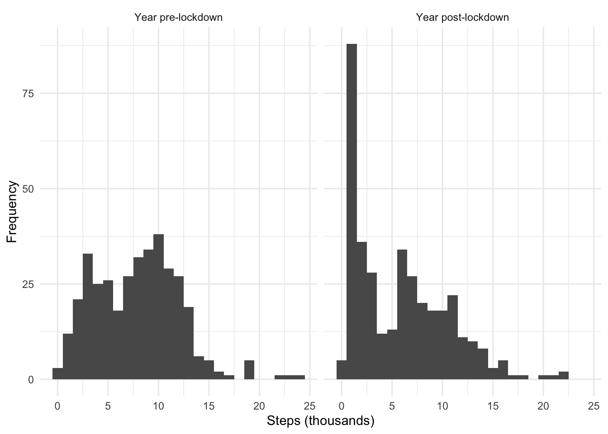
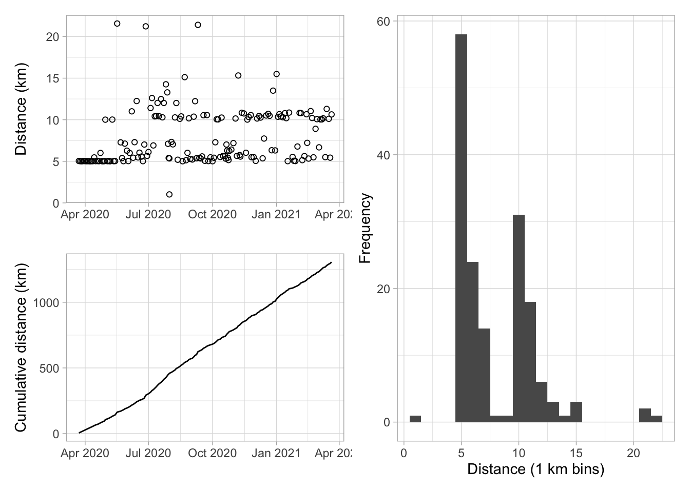
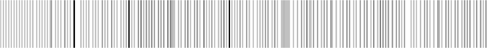

temp <- tempdir()
unzip(zipfile = "~/Downloads/export.zip", exdir = temp)tl;dr
You can export your Apple Health data as an XML file. This includes workouts linked from other apps, like Nike Run Club. I used the R packages {xml2} and the tidyverse to extract and clean my step counts and running activity.
Note
I revisited the theme of this post in 2023, but the format of the Apple Health download had changed. I updated the code needed to analyse the data and wrote a new post.
App storage
My healthcare provider peeks at the Apple Health app and rewards me if I meet daily step-count targets. I know my usual pattern of steps has been disrupted since the start of COVID-19 lockdowns, which began in the UK a year ago today.
To keep the step counter ticking over, I took up a new hobby on lockdown day one: running. I’ve recorded this activity on the Nike Run Club app, which I’ve linked to Apple Health.
I’ve in excess of 99 problems and at least two of them are related specifically to these health data:
- I don’t think my healthcare supplier is rewarding my step counts correctly and I need evidence1
- It’s not easy to get data out of the Nike Run Club app for further analysis
Luckily, you can export the data—which is stored locally on your iPhone—including any workouts linked from other apps. It’s provided as XML, which is a sensible, structured storage format, but not necessarily that familiar to the general R user.
This post looks at how to extract the data of interest and do something useful with it.
Warm up
To export activity data from the Health app (iOS 14.4):
- Open the Health app and tap your icon in the top right corner
- Scroll down and tap ‘Export All Health Data’
- Tap ‘Export’ in the pop-up and the sharing tray will slide up for you to choose where to send the data
You’ll get a zipped folder containing two XML files, export_cda.xml and export.xml, the latter of which contains your data. I stored and unzipped my folder locally for the purposes of this post.
My unzipped folder was about 140 MB and contained about 5 years of data.
We’ll also need a few R packages. The {xml2} package is on CRAN2 and has the tools you need to read and reshape XML files. It may be familiar if you’ve ever done any webscraping with R.3
We’ll also iterate to accumulate with the {purrr} package and do the ol’ wrangle-jangle with some other tidyverse packages.
library(xml2) # read and wrangle XML
library(tidyverse) # {purrr}, {dplyr}, {ggplot2}, {forcats}
library(lubridate) # date/time handlingX-tract
The aptly named xml2::read_xml() function will let you read your export.xml file.
xml_in <- read_xml(file.path(temp, "apple_health_export/export.xml"))Here’s a truncated view of the file’s structure:
xml_in{xml_document}
<HealthData locale="en_GB">
[1] <ExportDate value="2021-03-21 17:03:31 +0000"/>
[2] <Me HKCharacteristicTypeIdentifierDateOfBirth="" HKCharacteristicTypeIde ...
[3] <Record type="HKQuantityTypeIdentifierStepCount" sourceName="MD’s phone" ...
[4] <Record type="HKQuantityTypeIdentifierStepCount" sourceName="MD’s phone" ...
[5] <Record type="HKQuantityTypeIdentifierStepCount" sourceName="MD’s phone" ...
....The object has the class xml_document. You can see metadata in the first few rows and then you can see the actual data is stored in a series of ‘nodes’. Each record is an individual entry in our activity log and has attributes like type (e.g. step count), sourceName (i.e. the device name) and unit (e.g. a count).
We’re interested in extracting data from two types of node:
Recordfor the step counts, as previewed aboveWorkouts, which is where the Nike Run Club app data is stored
You can extract specific parts of an XML file by reference to their xpaths, which are special regex-like strings that point to specific places in the document. The function xml2::xml_find_all() takes an xpath and returns the matching information.
We need only supply the simple high-level xpaths //Record and //Workouts for our needs. The forward slashes read like ‘select all the nodes in the document with the following name’.
Once extracted, we can get the attributes—like type, sourceName, etc—of each node using xml2::xml_attr().
Step to it
So, let’s grab all the ‘record’ nodes and preview the first one.
records <- xml_find_all(xml_in, "//Record")
records[[1]]{xml_node}
<Record type="HKQuantityTypeIdentifierStepCount" sourceName="MD’s phone" unit="count" creationDate="2015-06-21 16:57:31 +0000" startDate="2015-06-21 16:31:17 +0000" endDate="2015-06-21 16:33:00 +0000" value="28">Each record is a single ‘bout’ of activity as perceived by the app. You can see the first record is a step count from my phone on 21 June 2015, which lasted about two minutes and consisted of 28 steps.
For my purposes I only care about three attributes: the date4, the type of activity and the associated value. We can pass a named vector of each attribute to xml2::xml_attr() using purrr::map_dfr() to collate the output into a tidy rectangle.
records_df <- map_dfr( # rowbind to dataframe
c(date = "creationDate", type = "type", steps = "value"),
~xml_attr(records, .x)
)
glimpse(records_df) # previewRows: 487,590
Columns: 3
$ date <chr> "2015-06-21 16:57:31 +0000", "2015-06-21 16:57:31 +0000", "2015-…
$ type <chr> "HKQuantityTypeIdentifierStepCount", "HKQuantityTypeIdentifierSt…
$ steps <chr> "28", "15", "44", "69", "80", "95", "1", "33", "41", "15", "24",…So what type of activity has been logged in the Record nodes?
pull(distinct(records_df, type)) [1] "HKQuantityTypeIdentifierStepCount"
[2] "HKQuantityTypeIdentifierDistanceWalkingRunning"
[3] "HKQuantityTypeIdentifierActiveEnergyBurned"
[4] "HKQuantityTypeIdentifierFlightsClimbed"
[5] "HKQuantityTypeIdentifierHeadphoneAudioExposure"
[6] "HKQuantityTypeIdentifierWalkingDoubleSupportPercentage"
[7] "HKQuantityTypeIdentifierWalkingSpeed"
[8] "HKQuantityTypeIdentifierWalkingStepLength"
[9] "HKQuantityTypeIdentifierWalkingAsymmetryPercentage"
[10] "HKCategoryTypeIdentifierSleepAnalysis"
[11] "HKCategoryTypeIdentifierMindfulSession" I’m interested in step counts, so I’ll isolate HKQuantityTypeIdentifierStepCount, convert the date to datetime class and then summarise the number of steps per day.
records_out <- records_df %>%
filter(type == "HKQuantityTypeIdentifierStepCount") %>%
mutate(date = as.Date(date), steps = as.integer(steps)) %>%
group_by(date) %>%
summarise(steps = sum(steps), .groups = "drop") %>%
mutate(
points = case_when(
steps > 12500 ~ 8L, steps > 10000 ~ 5L, steps > 7000 ~ 3L,
TRUE ~ 0L
)
)
glimpse(records_out)Rows: 2,094
Columns: 3
$ date <date> 2015-06-21, 2015-06-22, 2015-06-23, 2015-06-24, 2015-06-25, 20…
$ steps <int> 647, 11273, 10071, 3586, 5206, 10362, 19036, 3980, 11850, 15937…
$ points <int> 0, 5, 5, 0, 0, 5, 8, 0, 5, 8, 3, 5, 5, 0, 0, 5, 5, 3, 0, 8, 8, …I also created a new column that generates a ‘points’ value that my healthcare provider assigns to meeting certain step-count thresholds. Now I, tiny David, can sling this evidence into the eye of the behemoth cyclops that is my healthcare provider.
I recommend checking first if the data look sensible, because my highest step count was apparently 10,692,175. I don’t recall walking to Chicago and back to London on that day.
On a walkabout
There’s so many ways you could investigate the step count data, like how frequency changes by day of the week or time of year, for example.
Here’s a quick exploration: how did my step-count frequency change in the year up to 23 March 2020—the announcement of the UK’s first lockdown—and in the year since?
records_out %>%
mutate(
covid_year = case_when(
date >= "2020-03-23" & date < "2021-03-23" ~ "Year post-lockdown",
date >= "2019-03-23" & date < "2020-03-23" ~ "Year pre-lockdown",
TRUE ~ NA_character_
)
) %>%
filter(!is.na(covid_year)) %>%
ggplot() +
geom_histogram(aes(steps / 1000), binwidth = 1) +
facet_grid(~fct_rev(covid_year)) +
labs(x = "Steps (thousands)", y = "Frequency") +
theme_minimal()
Ha, not a surprise, but interesting to see it visually: there’s been a far higher proportion of days with a very small number of steps in the lockdown year. The second peak of the bimodal distribution has also fallen to a lower value with a more gradual tail. This is understandable: I used to walk on parts of my commute and lunchtimes, whereas my lockdown days have involved running or basically nothing.
Jog on
Now let’s look at the year’s worth of running data from the Workout nodes of the XML.
workouts <- xml_find_all(xml_in, "//Workout")
workouts[[1]]{xml_node}
<Workout workoutActivityType="HKWorkoutActivityTypeRunning" duration="24.81425000031789" durationUnit="min" totalDistance="5.043024469383905" totalDistanceUnit="km" totalEnergyBurned="384.382" totalEnergyBurnedUnit="kcal" sourceName="Nike Run Club" sourceVersion="2003161908" creationDate="2020-03-23 08:01:39 +0000" startDate="2020-03-23 07:36:45 +0000" endDate="2020-03-23 08:01:39 +0000">
[1] <MetadataEntry key="HKIndoorWorkout" value="0"/>
[2] <WorkoutEvent type="HKWorkoutEventTypePause" date="2020-03-23 08:01:34 +0 ...The attributes are slightly different for workouts compared to records. This time I care about the activity type (just runs), the date, the distance and the time taken. Unfortunately there isn’t any data on split times in this file, which means I can’t calculate record times, nor is there other detail like altitude gained.
workouts_df <- map_dfr(
c(date = "creationDate", type = "workoutActivityType",
km = "totalDistance", dur = "duration"),
~xml_attr(workouts, .x)
)
glimpse(workouts_df)Rows: 215
Columns: 4
$ date <chr> "2020-03-23 08:01:39 +0000", "2020-03-25 08:14:38 +0000", "2020-0…
$ type <chr> "HKWorkoutActivityTypeRunning", "HKWorkoutActivityTypeRunning", "…
$ km <chr> "5.043024469383905", "5.0160254470843", "5.014558848776319", "5.0…
$ dur <chr> "24.81425000031789", "24.46356666882833", "24.37278333504995", "2…We can do a bit of light wrangling to convert ‘decimal minutes’ to seconds, compute a rough pace, and round the values for readability. I used lubridate::seconds_to_period() to generate a period-class value that presents the data in days, hours, minutes and seconds.
workouts_out <- workouts_df %>%
filter(type == "HKWorkoutActivityTypeRunning", km > 1) %>%
mutate(
date = as.Date(date),
across(c(dur, km), as.numeric), dur = round(dur, 3)
) %>%
separate(col = dur, into = c("mins", "mins_dec"), sep = "\\.") %>%
transmute(
date, km,
s = (as.numeric(mins) * 60) + ((as.numeric(mins_dec) / 1000) * 60),
mins = seconds_to_period(round(s)),
avg_pace = seconds_to_period(round(s / km)),
s = round(s), km = round(km, 2)
)
glimpse(workouts_out)Rows: 164
Columns: 5
$ date <date> 2020-03-23, 2020-03-25, 2020-03-27, 2020-03-29, 2020-03-31, …
$ km <dbl> 5.04, 5.02, 5.01, 5.03, 5.03, 5.02, 5.02, 5.02, 5.01, 5.02, 5…
$ s <dbl> 1489, 1468, 1462, 1545, 1476, 1435, 1414, 1468, 1410, 1366, 1…
$ mins <Period> 24M 49S, 24M 28S, 24M 22S, 25M 45S, 24M 36S, 23M 55S, 23M …
$ avg_pace <Period> 4M 55S, 4M 53S, 4M 52S, 5M 7S, 4M 53S, 4M 46S, 4M 42S, 4M …High-vis apparel
The data are now quite rich and there’s many ways to explore it. As a starter, here’s some basic summaries for the year to 23 March 2021:
workouts_out %>%
summarise(
`Total runs` = n(),
`Total distance (km)` = round(sum(km)),
`Total time` = seconds_to_period(sum(s)),
`Days per run` = round((max(date) - min(date)) / `Total runs`, 1),
`Best average pace` = seconds_to_period(min(round(s / km))),
`Total runs of 5 to 10 km` = nrow(filter(., km >= 5 & km < 10)),
`Total runs of 10 to 21.1 km` = nrow(filter(., km >= 10 & km < 21.1)),
`Total runs of over 21.1 km` = nrow(filter(., km > 21.1))
) %>%
mutate(across(everything(), as.character)) %>%
pivot_longer(everything(), names_to = "Summary", values_to = "Value") %>%
knitr::kable()| Summary | Value |
|---|---|
| Total runs | 164 |
| Total distance (km) | 1306 |
| Total time | 4d 14H 39M 15S |
| Days per run | 2.2 |
| Best average pace | 4M 22S |
| Total runs of 5 to 10 km | 98 |
| Total runs of 10 to 21.1 km | 62 |
| Total runs of over 21.1 km | 3 |
In terms of visualisation, I’m interested in what my pattern of run distance looks like. The code below produces plots for run distances by date (top left), cumulative distance by date (bottom left), and a histogram of run distances in 1 km bins (right).
p1 <- ggplot(workouts_out) +
geom_point(aes(date, km), shape = 1) +
labs(x = "", y = "Distance (km)") +
theme_light()
p2 <- workouts_out %>%
mutate(km_cum = cumsum(km)) %>%
ggplot() +
geom_line(aes(date, km_cum)) +
labs(x = "", y = "Cumulative distance (km)") +
theme_light()
p3 <- ggplot(workouts_out) +
geom_histogram(aes(km), binwidth = 1) +
labs(x = "Distance (1 km bins)", y = "Frequency") +
theme_light()
library(patchwork) # easy plot layouts
(p1 / p2) | p3
You can see I started with a lot of 5 km runs in April and May 2020, before branching out to 10 km or more. I’ve been pretty consistent in running every two or three days and that’s reflected in the chart of cumulative distance. The histogram shows that most runs have been just above 5 km, with another peak just above 10 km. That makes sense: I intentionally set out to run at least these distances.
Another idea is that you you could use the {calendR} package to plot a calendar of your activity.5 Or you could do something more abstract: here’s a ‘run barcode’ with a line per run for the full year. The darker the line, the further the distance travelled.
run_days <- left_join(
tibble(date = as_date(ymd("2020-03-23"):ymd("2021-03-22"))),
workouts_out %>%
filter(date >= "2020-03-23" & date < "2021-03-23") %>%
group_by(date) %>% summarise(km = sum(km), .groups = "drop"),
by = "date"
) %>% replace_na(list(run = 0))
par(mar = rep(0, 4))
image(matrix(run_days$km), col = grey.colors(11, 0.8, 0))
box(col = "white")
A few things stick out to me when scanning this barcode. The three black bands are the half-marathons; the white space (i.e. no runs) after the first of these indicates the rest my knees needed afterwards. There’s a thick grey band after halfway, which is when I tried to run seven days in a row (the app is gamified and you get a special badge for doing that). You can also see how the pattern was more regular at the start, but I’ve since settled into a routine of just trying to fit in three runs and about 25 km per week.
Cool down
So the premise was quite simple: download your Apple Health data, read the XML file, extract the nodes of interest, wrangle lightly and present it. I’ve only done a basic exploration of the data, but there’s so much more you could do.
After starting this post, I noticed that Mark Koester has written an in-depth post about Apple Health data, with a focus on Python code for achieving a similar goal. It notes third-party tools like QS Access for extracting data into a friendlier CSV format, for example.
It’ll be interesting to revisit this in another year’s time to see how a ‘return to normality’ (whatever that means) might impact these patterns of activity.
Environment
Session info
Last rendered: 2023-07-21 19:29:14 BSTR version 4.3.1 (2023-06-16)
Platform: aarch64-apple-darwin20 (64-bit)
Running under: macOS Ventura 13.2.1
Matrix products: default
BLAS: /Library/Frameworks/R.framework/Versions/4.3-arm64/Resources/lib/libRblas.0.dylib
LAPACK: /Library/Frameworks/R.framework/Versions/4.3-arm64/Resources/lib/libRlapack.dylib; LAPACK version 3.11.0
locale:
[1] en_US.UTF-8/en_US.UTF-8/en_US.UTF-8/C/en_US.UTF-8/en_US.UTF-8
time zone: Europe/London
tzcode source: internal
attached base packages:
[1] stats graphics grDevices utils datasets methods base
other attached packages:
[1] patchwork_1.1.2 lubridate_1.9.2 forcats_1.0.0 stringr_1.5.0
[5] dplyr_1.1.2 purrr_1.0.1 readr_2.1.4 tidyr_1.3.0
[9] tibble_3.2.1 ggplot2_3.4.2 tidyverse_2.0.0 xml2_1.3.5
loaded via a namespace (and not attached):
[1] gtable_0.3.3 jsonlite_1.8.7 compiler_4.3.1 tidyselect_1.2.0
[5] scales_1.2.1 yaml_2.3.7 fastmap_1.1.1 R6_2.5.1
[9] labeling_0.4.2 generics_0.1.3 knitr_1.43.1 htmlwidgets_1.6.2
[13] munsell_0.5.0 pillar_1.9.0 tzdb_0.4.0 rlang_1.1.1
[17] utf8_1.2.3 stringi_1.7.12 xfun_0.39 timechange_0.2.0
[21] cli_3.6.1 withr_2.5.0 magrittr_2.0.3 digest_0.6.33
[25] grid_4.3.1 rstudioapi_0.15.0 fontawesome_0.5.1 hms_1.1.3
[29] lifecycle_1.0.3 vctrs_0.6.3 evaluate_0.21 glue_1.6.2
[33] farver_2.1.1 fansi_1.0.4 colorspace_2.1-0 rmarkdown_2.23
[37] tools_4.3.1 pkgconfig_2.0.3 htmltools_0.5.5 Reuse
CC BY-NC-SA 4.0